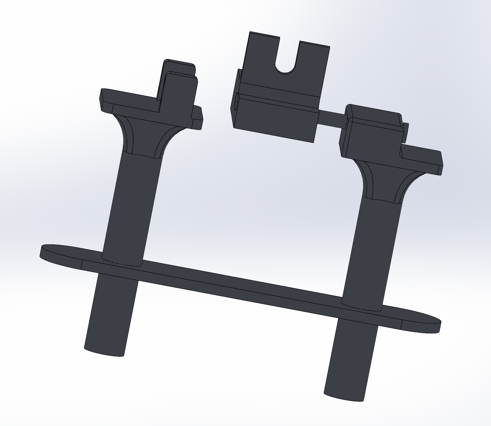
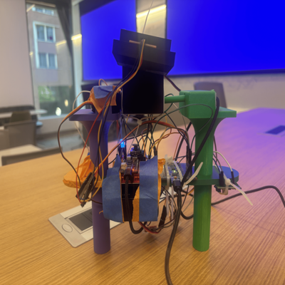

Sensor feedback
The IMU provides accelerometer and gyroscope data for estimating pitch and roll.
Balanced Automated Two-axis Rotational Assembly: an IMU-stabilized camera gimbal with joystick control, wireless mode control, and bare-metal firmware.

The system reads IMU data over I2C, runs a control loop on an ATmega328PB, drives two servo motors with PWM, accepts joystick input through ADC channels, and uses an ESP32-backed Flask interface for wireless mode control.
The IMU provides accelerometer and gyroscope data for estimating pitch and roll.
Bare-metal C firmware filters the orientation estimate and computes stabilizing servo commands.
The joystick adjusts the target setpoint, while the ESP32 and web app expose remote mode control.
The final demo video shows the gimbal switching modes, stabilizing the camera platform, responding to joystick input, and demonstrating the completed system. The linked YouTube video is intended to be accessible to the teaching team and is under the 5 minute requirement.

These images show the completed physical device, the mechanical assembly, and the interior electronics and wiring that make the gimbal work.


.jpeg)
The image below is the square project image from the README used for the course website.

The final implementation met the core sensor, PWM, joystick, stabilization, and mode-control goals, though the wireless design changed from UART pitch/roll commands to an ESP32 and Flask mode-control interface.
| ID | Requirement | Final result |
|---|---|---|
| SRS-01 | The firmware shall read 3-axis acceleration data and 3-axis gyroscope data from the IMU over I2C at a rate of 100 Hz +/- 10 Hz. | Met. Serial output showed an IMU update rate of about 105 samples per second. |
| SRS-02 | The firmware shall sample the 2 ADC channels recording data from the 2 axes of the joystick at a rate of at least 50 Hz and have a dead region at +/- 5% of the sensor range around the joystick sensor to prevent stick drift. | Met. Joystick ADC input and a deadband are implemented in joystick.c. |
| SRS-03 | The firmware shall complete a PID control loop for each axis at least every 10 ms +/- 2 ms, computing corrective commands for the servo motors from the error between measured and desired angle. | Met. The main loop runs gimbal_control_step continuously, with measured loop timing around 11 ms. |
| SRS-04 | The firmware shall generate PWM signals for the two servo motors with PWM ranges from 1 ms to 2 ms, corresponding to the angular range of the servo motors. | Met. Oscilloscope captures showed approximately 1 ms and 2 ms PWM pulse widths. |
| SRS-05 | The firmware shall support two operating modes: stabilized hold and joystick-controlled desired angle. The modes can be selected using a mode button. | Partially changed. The final button behavior controls gimbaling on/off, and joystick input adjusts the stabilization setpoint while enabled. |
| SRS-06 | When the mode select button is held for at least 1 second, the firmware shall level out the platform within 2 seconds. | Changed. The button was repurposed to enable or disable stabilization rather than a timed level-out command. |
| SRS-07 | The stabilization firmware shall reject disturbances of +/- 15 degrees in roll or pitch and return the platform to +/- 3 degrees of the requested roll/pitch within 500 ms. | Met in final behavior. The team reports disturbance rejection significantly faster than 500 ms during testing and demo operation. |
| SRS-08 | The firmware shall accept wireless commands for pitch, roll, and mode received from ESP32 over UART and update desired angle settings within 100 ms of receiving an update. | Changed. UART pitch/roll commands were replaced by a Flask web server and ESP32 path for remote mode control. |
The firmware reads 3-axis acceleration and gyroscope data from the IMU over I2C. Serial output showed a measured update rate of about 105 samples per second, matching the 100 Hz +/- 10 Hz target.
The joystick uses two ADC channels with a deadband to prevent stick drift. The implementation is visible in joystick.c, where the deadband is intentionally set above the original +/- 5% margin.
The PWM output was validated with oscilloscope captures showing pulse widths near 1 ms and 2 ms, matching the expected servo command range.
The final mode behavior became gimbaling on/off rather than the original exact two-mode plan. The demo video shows the button disabling stabilization and then re-enabling it, causing the camera to return to the stabilized state.


The final hardware met the main mechanical, payload, joystick, IMU, ESP32, and runtime goals. Power delivery changed from the original AA-battery plan to a Li-Po motor supply plus USB-C battery power for the controller.
| ID | Requirement | Final result |
|---|---|---|
| HRS-01 | The system shall use two servos each providing at least 1.8 kg-cm of torque. | Met by specification. Direct torque was not measured, but the supplied voltage and servo datasheet indicated torque above the minimum requirement. |
| HRS-02 | The mechanical frame shall provide two independent rotational axes, roll and pitch, with at least +/- 30 degrees of rotation on each axis. | Met. The frame supports approximately +/- 90 degrees of motion, exceeding the original range requirement. |
| HRS-03 | An IMU shall communicate with the ATmega328PB over I2C to provide 16-bit acceleration and gyroscope data. | Met. The IMU communicates over I2C, and logic-analyzer validation confirmed 16-bit packet behavior. |
| HRS-04 | The balanced platform shall support a camera of at least 30 grams without degraded performance. | Met. The final gimbal supported a GoPro payload measured at 141 grams. |
| HRS-05 | The system shall be powered by 5 AA batteries with a regulated 5V rail for logic components and shall operate for at least 30 minutes. | Partially changed and met on runtime. The power design changed to a 7.4 V Li-Po motor supply plus USB-C battery power for the ATmega, and the system ran for about 40 minutes. |
| HRS-06 | The joystick shall provide two analog voltage outputs readable by the ATmega328PB ADC channels. A separate button shall control mode switches. | Met. The joystick controls pitch and roll through two ADC channels, with a deadband to reduce stick drift, and the button controls gimbaling state. |
| HRS-07 | The system shall support an ESP32 with 5V supply communicating with the ATmega328PB over UART. | Changed. The ESP32 was powered and used for IoT functionality, but final communication used the web-control path rather than the originally planned UART command flow. |
The mechanical frame provided two independent rotational axes and exceeded the original +/- 30 degree target. Validation images show approximately 90 degrees of motion in each direction using a straight edge.
The platform supported a GoPro payload weighing 141 grams, exceeding the 30 gram camera-support requirement without degraded performance during the demo.
The system ran for about 40 minutes with the gimbal active, exceeding the 30 minute runtime target after the power approach was revised.
The joystick controlled pitch and roll through ADC inputs, and the ESP32 was powered and used for IoT functionality through the web-control path shown in the final demo.


The block diagram summarizes the hardware and software flow: sensing, control, power, actuation, and wireless interaction.

The project brought together mechanical prototyping, embedded sensing, control logic, wireless communication, and web development into one working system.
The team learned how much integration work is hidden between a working subsystem and a working product. CAD, 3D printing, IMU drivers, PWM generation, joystick input, and ESP32 communication all had to be debugged together rather than in isolation.
The strongest parts of the project were the mechanical prototype, the IMU and servo control path, and the final hardware-software integration. Supporting a real GoPro-class payload and demonstrating active stabilization were the accomplishments the team was most proud of.
The approach changed as obstacles appeared. The wireless design moved away from UART-based pitch and roll commands and toward a Flask and ESP32 path for mode control. The power system also changed from the original AA-battery plan to a more practical Li-Po and USB-C battery setup.
With more time, the next steps would be cleaner power distribution, a more enclosed mechanical case, tighter PID tuning, and a more complete wireless control interface for setting pitch and roll directly from the web app.